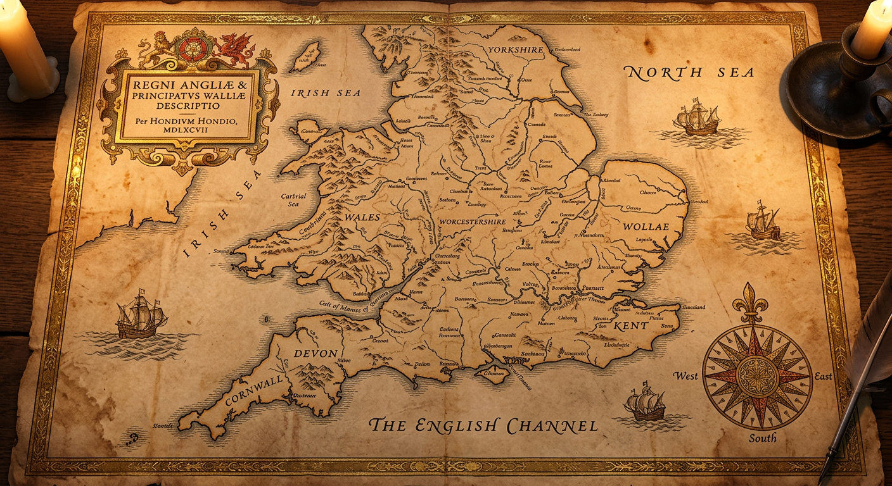

Bodleian Library, Oxford · MSS. Hale-Marsh Collection
Cartographic Record · Hale Lands 1066–2026
● Cartographic view
← Archive Home
Family Tree →
The Hale Lands
An Account of Places Significant to the House of Hale · 1066–2026
All Eras
I · Norman
II · Plague
III · Tudor
IV · Civil War
V · Georgian
VI · Regency
VII · Victorian
VIII · Great War
IX · Second War
X · Present
Select an era to illuminate its places upon the map

Halecroft · The Seat
Worcester
Winchester
Pershore
Gloucester
Edgehill · Battle Site
Oxford · Bodleian
Shropshire · Whitmore Park
Bath
London
Brixton, London
Harlow, Essex
Normandy, France
? Unknown Location
×
—
Connected persons
×